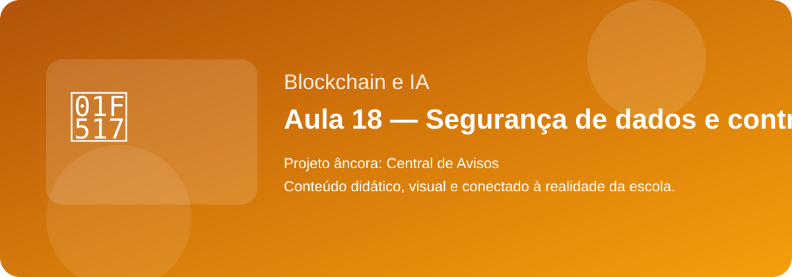

Aula alinhada ao planejamento do 2º bimestre e conectada ao projeto Central de Avisos.
Responda às 10 questões e veja sua pontuação.
Microproduto individual ligado ao projeto Central de Avisos.
A aula ajuda a turma a pensar soluções para organizar provas, horários, prazos e comunicados da escola.
Conteúdo progressivo, com exemplos do cotidiano e ligação direta com o problema real da escola.
Leia o conteúdo, copie o resumo e finalize com o quiz para revisar.